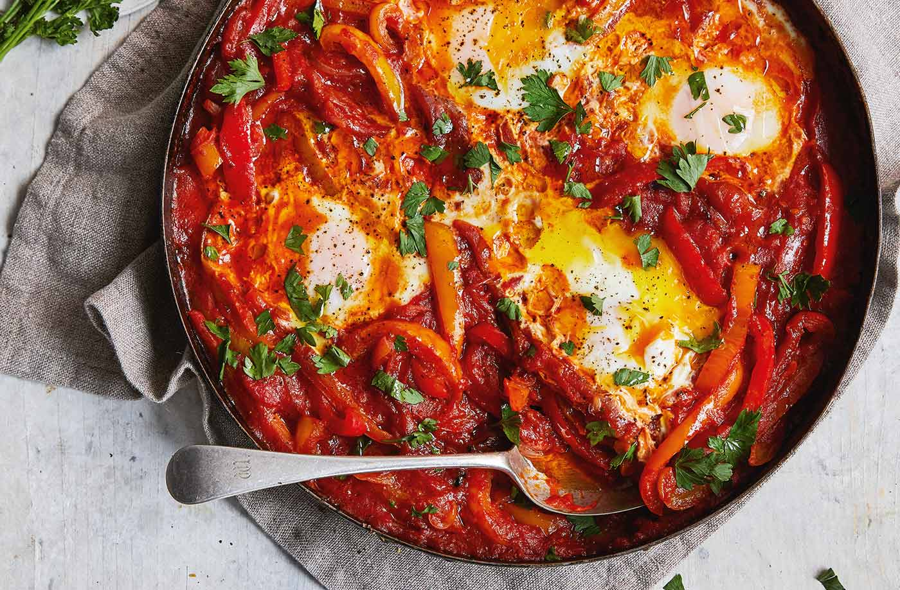

Shakshouka

“Harissa adds warmth and a ray of much-needed sunshine to this
twist on a Middle-Eastern classic. It’s a one-pan wonder!”
Ingredients
Yield: 4 servings
- 200 g potatoes
- 200 g butternut squash
- Olive oil
- 3 mixed-color peppers
- ½ a bunch of fresh flat-leaf parsley (15g)
- 2 gloves of garlic
- 1 teaspoon fennel seeds
- 1 teaspoon smoked paprika
- 1 teaspoon ground cumin
- 1 teaspoon rose harissa
- 1 x 400g tin of quality plum tomatoes
- 4 large eggs
Steps
- Scrub the potatoes and squash (deseed if needed), slice into 1cm-thick chips, then
place in a large non-stick frying pan on a medium heat with 1 tablespoon of oil.
- Deseed and roughly chop the peppers, adding them to the pan as you go.
- Pick the parsley leaves, finely slicing the stalks. Peel and finely slice the garlic and add
to the pan with the parsley stalks, fennel seeds, paprika and cumin, then cover and cook
for 10 minutes, stirring regularly.
- Flick over the harissa and scrunch in the tomatoes, then stir in ¼ of a tin’s worth of water,
pop the lid back on and cook for a further 10 minutes, or until the potatoes and squash are
soft, stirring occasionally.
- Remove the lid, stir in the parsley leaves and season with a pinch of sea salt, then cook
until the sauce has thickened and reduced.
- Make 4 wells with the back of a spoon, crack in the eggs, pop the lid on and cook the eggs
to your liking. Nice served with warm flatbreads and extra harissa, if you like.